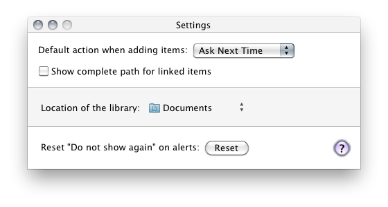

The default action choosen when a new file is added can be changed or reset, in this case, the default action will be prompt for the next time you will add a file.
For linked items (items that remains at their original place), the complete path can be shown on linked items' cells.
The library, where all items are placed, is located by default into the ~/Document folder. The location can be changed by clicking on the button and select Choose....
You can reset hidden alerts when you've clicked "Do not show this message again".